台北捷運，減碳救地球，一天載你上下班兩次贖罪
公司說要環保永續，我們努力減碳、順便減肥
ACT NOW！不然以後沒地球可打卡
永續就是少點塑膠、多點良心，至少讓地球撐到退休
同仁們一起撐下去，反正升遷難，不如先升級成環保模範
台北要變永續城市，先從我們每天不暴走開始
-
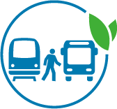
步行/騎自行車/搭乘大眾運輸移動
每日步行約3-5公里，就可減少交通工具1.42kg碳排放量，減少碳排也有益健康
-

節電第一，關掉不必要的電器
辦公室午休時關燈、下班確實關機、冷氣設定為26-28°C的最適溫度
-

減少紙張浪費
e化減少紙本、紙張雙面使用、申辦電子帳單、電子發票好處多，荷包不再塞滿滿還有專屬兌獎獎金
-
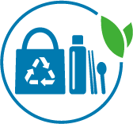
減塑生活的開始
讓環保餐具、環保袋成為你的每日必需品，購物自備購物袋、外帶打包食物自備餐盒、叫外送備註不附餐具
-
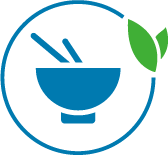
降低食物浪費
吃完碗裡的食物，避免製造剩食，處理廚餘也需要能源，還是吃完為首選
-
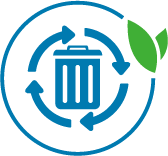
回收、再利用
循環4R不能忘：Reduce（減少使用）、Reuse（物盡其用）、Repair（修好再用）、Recycle（循環再用）
-
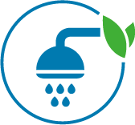
省水大作戰
洗車時用水桶代替水沖、澆花以洗菜洗米水代替、洗臉以盆槽代替水流沖洗、熱水流出前的冷水再利用，每省一度水就能減少0.21kg碳排放，讓我們一起省水減碳！
-
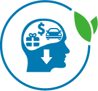
降低欲望與消費
精選真心喜愛的物品不任意丟棄、採買先列清單不過度消費、支持環保概念的品牌
-
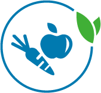
多吃蔬果
大部份植物性食物都是低碳之選，碳排放比動物性食物低10至50倍；選擇在地、當季食材，支持有機與在地小農
-
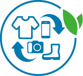
舊愛新歡、響應二手物品
讓家中用不到的二手物成為別人的幸福；購買新品前優先瀏覽拍賣網站有無符合需求的二手物，共享循環
-
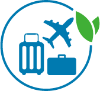
讓旅行更有意義
飛行也能做環保，優先選擇直航經濟艙、行李少15kg就可減少200kg碳足跡；選擇永續環保旅館，自備盥洗用品、續住不更換毛巾床單
-
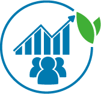
自我提升與高效率作業
高效完成工作可以減少使用電力的時間；制訂美好的生活目標並且幫助他人，也是永續生活不可缺少的能力
-
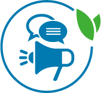
口耳相傳
和左鄰右舍一起當北捷環保小尖兵，利用社群媒體推廣淨零綠生活運動，口耳相傳的行銷效果要比廣告投放多出10倍以上